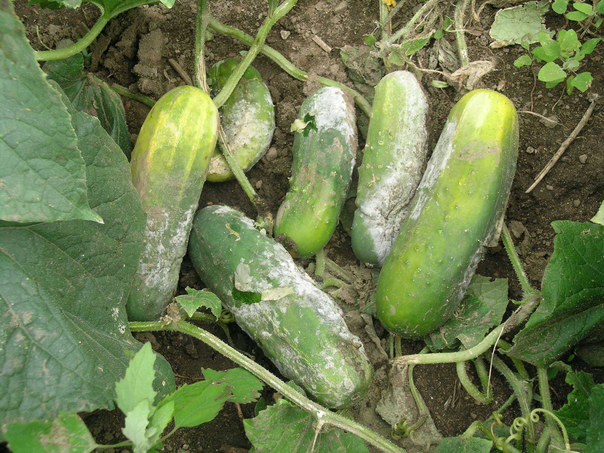
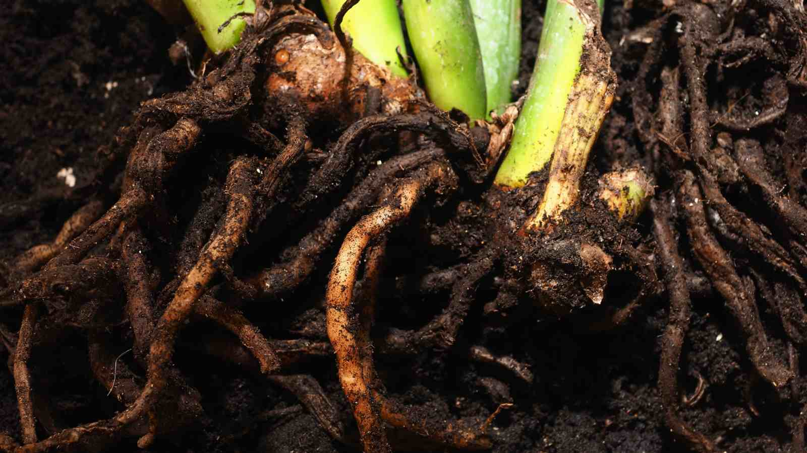
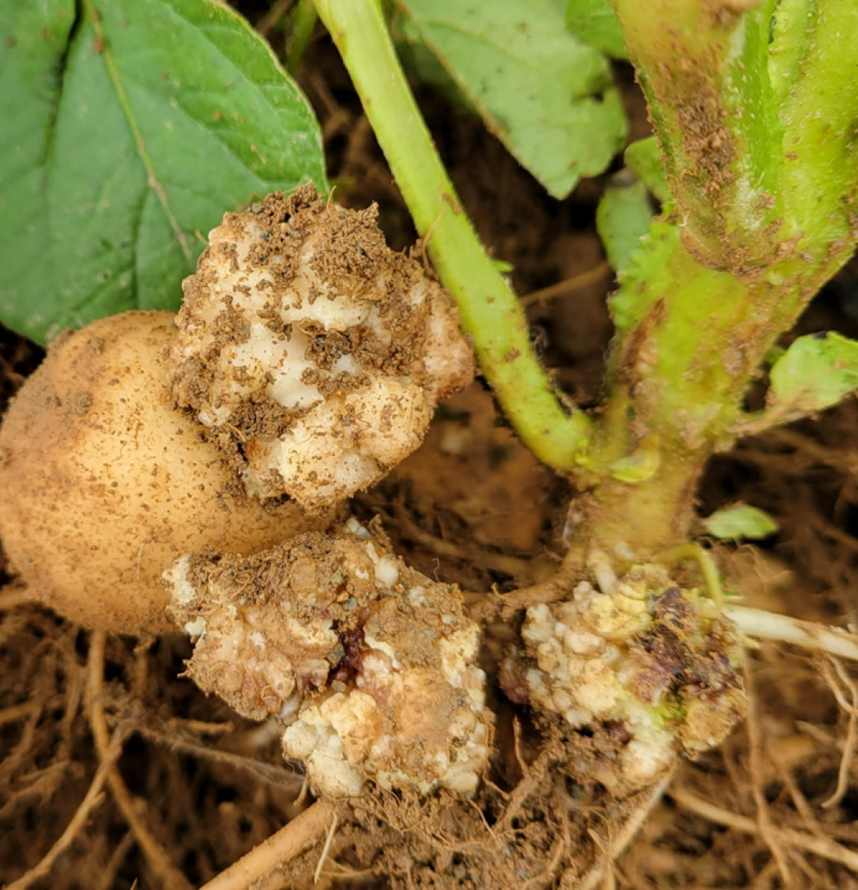

Disease conditions that impact vegetable crops including leafy greens, root vegetables, and greenhouse-grown produce.

Fungal disease affecting leafy vegetables causing yellowing, wilting, and fuzzy growth on leaf undersides.

Soil-borne disease causing decay of root systems in carrots, potatoes, and other root vegetables.

Devastating disease affecting tomatoes and potatoes, causing dark lesions and rapid plant death in humid conditions.